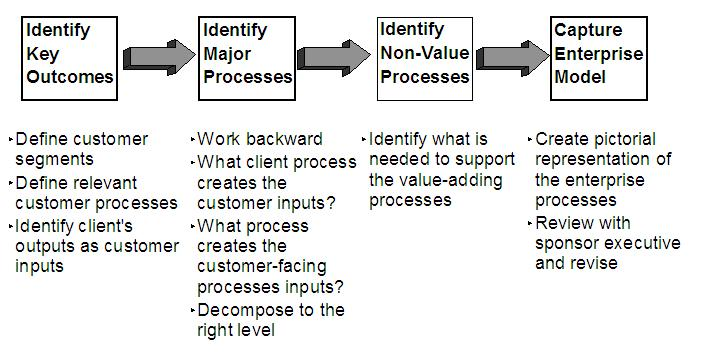

The starting point for developing this work product is an understanding of the industry and the strategic capabilities
for the client's business.
If the client has not identified the processes with generally accepted nomenclature and relationships, it will be
necessary to create this work product. Various approaches are listed below. The one chosen is dependent on
the source materials available and the information available from the client team subject matter experts.
-
One popular approach is to start with a generic or industry process model that can be used as a "strawman" to be
modified for the client. The IBM Business Reference Model(s), the IT Process Model (ITPM) and the APQC
Process Classification Framework are possible starting points. Also IBM has developed models that are
licensed to clients, such as the Information FrameWork (IFW) for retail banking, Insurance Application Architecture
(IAA) and Retail Application Architecture (RAA).
-
Another approach is to identify and decompose the business management functions, and then identify the
processes that are required to support each of these.
-
Alternatively, the processes can be derived from the business event list (if this work product has been created).
-
Sometimes a list of business terms exists, e.g., verb lists and object (noun) lists. It is possible to
construct potential process names from these lists. However, it is then important to clarify/document those
that are out of scope.
-
If the client has already selected a package, but has not identified the processes, it is highly recommended that
the package vendor's process model (if one exists) be reviewed as the starting point for helping the client
identify their processes. However, there is a difference between a business process model and a package
process model. Package process models only show those processes/activities that are supported by the package,
i.e., automated, whereas a business process model includes the manual processes/activities, as well.
-
If the client has identified the processes, then request that the client review the content with you, identifying
any changes necessary to make it current and accurate (pay particular attention to ensuring that processes, not
business management functions have been identified, although it is acceptable to show the processes in the context
of the business management function(s) that they support).
-
Define and document the process descriptions and narrative detail for the process/sub-process levels.
-
Set up a client meeting to review the processes identified and their boundaries (described in the completed
WPD). If this work product is being used to identify processes in and out of the scope of the engagement, or
to select processes for redesign, then it is critical that consensus is reached. A draft of the documentation
should be distributed to the workshop participants before the meeting. A revised version of the Work Product
Description should be created based on the consensus reached in the meeting.
The following is an approach for identifying the processes within an enterprise:

|